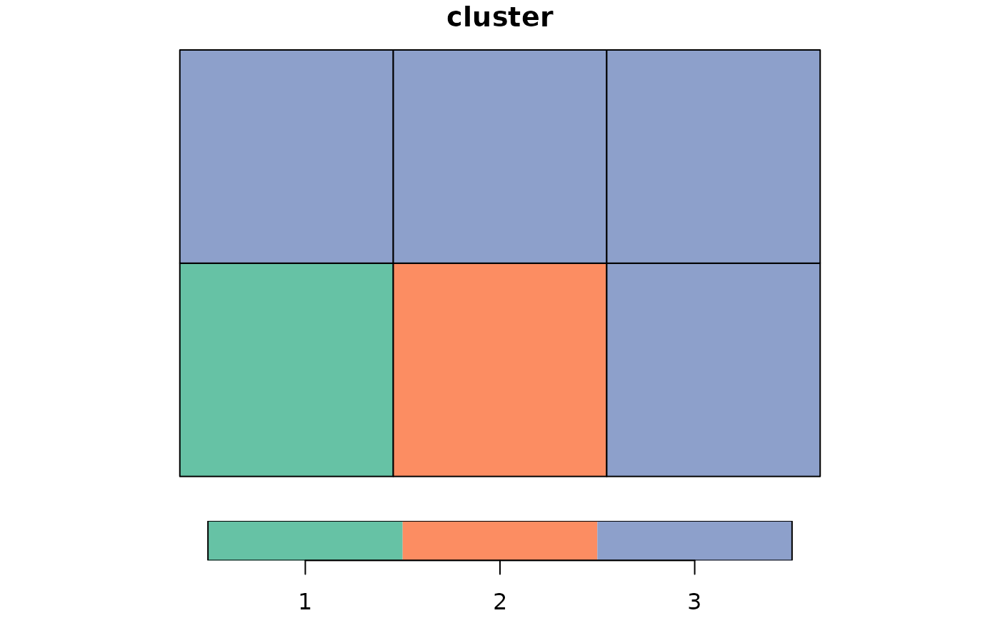
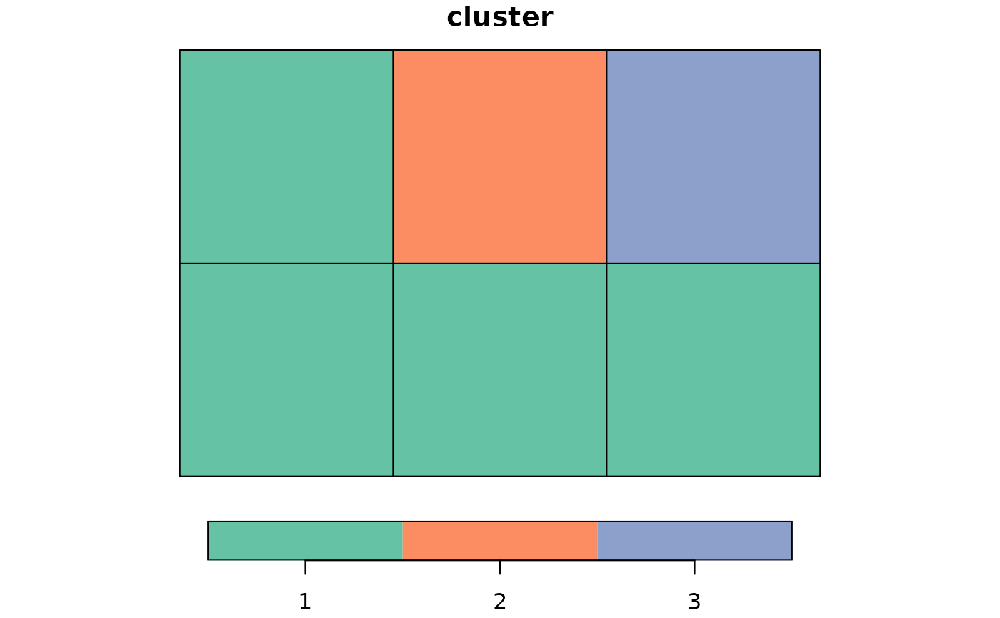

Creates an undirected graph from spatial data or a weighted adjacency matrix,
computes its minimum spanning tree (MST), and partitions it into nclust clusters.
Accepts weighted matrix or Matrix objects, and stars objects with either
vector geometry (contiguity via sf::st_touches()) or raster dimensions
(4-connected grid adjacency for non-NA pixels).
Usage
genclust(x, ...)
# Default S3 method
genclust(x, ...)
# S3 method for class 'matrix'
genclust(x, nclust = 10, weights = NULL, ...)
# S3 method for class 'Matrix'
genclust(x, nclust = 10, weights = NULL, ...)
# S3 method for class 'stars'
genclust(x, nclust = 10, spnames = NULL, response = NULL, weights = NULL, ...)Arguments
- x
Spatial data or adjacency matrix. Accepted classes:
matrix,Matrix, orstars.- ...
Not used; required for S3 method consistency.
- nclust
Integer. Number of initial clusters (default
10).- weights
Optional numeric vector of edge weights with
n^2elements, wherenis the total number of spatial units (before filtering). IfNULL, random weights are assigned.- spnames
Character vector with the names of the spatial dimensions. If
NULL, auto-detected as dimensions with a non-NAregulardeltainstars::st_dimensions(). Currently supports 1D (vector geometry) and 2D raster grids; 3D spatial grids (e.g.x,y,z) are not yet supported.- response
Character. Name of the attribute in
xto use for determining valid spatial cells (cells where all observations are NA are excluded). IfNULL(default), all spatial cells are treated as valid.
Value
A list with:
graph: undirected igraph object representing spatial contiguity.mst: minimum spanning tree ofgraph.membership: integer vector of cluster assignments (length = number of valid spatial units).valid_ids: integer vector of flat spatial positions included in the graph (only present forstarsinput;NULLfor matrix/Matrix input).
Examples
library(sfclust)
library(sf)
library(stars)
# stars object with vector geometry
geom <- st_make_grid(cellsize = c(1, 1), offset = c(0, 0), n = c(3, 2))
x <- st_as_stars(st_sf(z = 1:6, geometry = geom))
clust <- genclust(x, nclust = 3)
plot(st_sf(geom, cluster = factor(clust$membership)))

# stars raster input
x <- st_as_stars(cluster = matrix(1:35, 5))
clust <- genclust(x, nclust = 4)
x$cluster <- clust$membership
plot(x, col = rainbow(4))

# matrix input
x <- matrix(c(0,1,0,1, 1,0,1,0, 0,1,0,1, 1,0,1,0), nrow = 4)
clust <- genclust(x, nclust = 2)
clust$membership
#> [1] 1 2 1 1